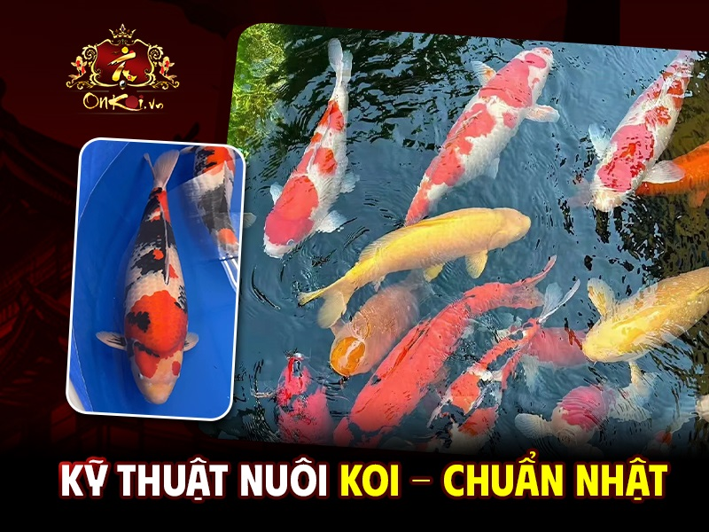
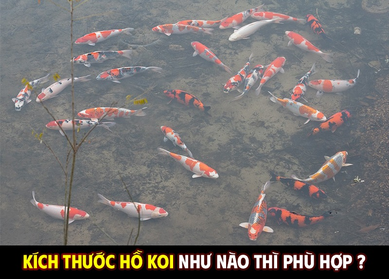
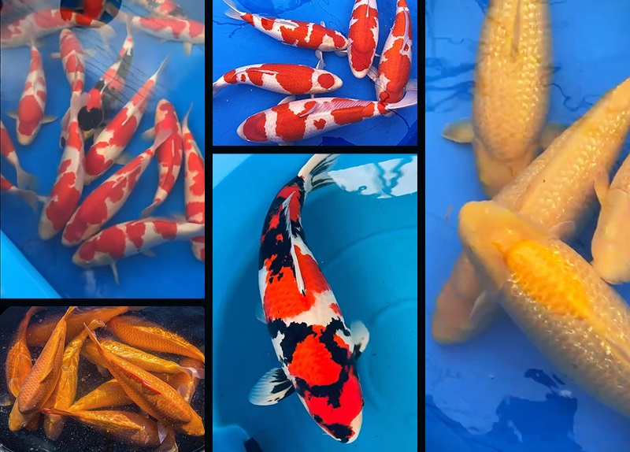

@Copyright
 Trang chủ
Trang chủ
Tin Tức
>Hướng dẫn kỹ thuật nuôi và chăm sóc cá koi
Hướng dẫn kỹ thuật nuôi và chăm sóc cá koi
Cá Koi có thể sống tới hơn 225 tuổi , khiến chúng trở thành động vật có xương sống sống lâu nhất trên Trái Đất. Nuôi Koi tương đối dễ dàng, vui vẻ và bổ ích vì chúng tương đối thân thiện, hòa đồng. Chỉ cần chắc chắn làm theo các hướng dẫn kỹ thuật nuôi và chăm sóc cá Koi sau đây sẽ giúp Koi của bạn sinh trưởng và phát triển tốt nhất.
Nhật Bản là quốc gia đầu tiên nuôi thành công giống các chép Koi từ năm 1820 tại thị trấn Ojiya, tỉnh Niigata. Trước kia, cá Koi được nuôi với mục đích chính là cung cấp thực phẩm. Tuy nhiên, sau khi người nuôi nhận thấy chúng đã biến đổi màu sắc sau khi nuôi chung nên đã tiến hành thực hiện nhân giống, lai tạo thành nhiều màu sắc khác nhau để nuôi cá làm cảnh trong bể cá, sân vườn…
Tính đến thời điểm hiện tại, có tới hơn khoảng 100 giống Koi và được chia làm 13 loài chính, đặc điểm chung của chúng là có hình dáng, hoa văn, màu sắc và họa tiết khá tươi mới, sặc sỡ với tuổi đời sống lâu năm trong điều kiện nuôi tốt. Đặc biệt, hình dạng và màu sắc của cá Koi cũng thay đổi theo môi trường sống và độ tuổi.
Trong phong thủy, cá Koi được cho là mang đến những điều may mắn, tốt lành, vượng khí, sinh tài lộc, may mắn cho gia chủ… Về cơ bản, giống cá Koi rất dễ nuôi, dễ ăn, có thể thích nghi tốt với nhiều điều kiện thời tiết khác nhau. Tuy nhiên, do chúng có giá trị về kinh tế khá cao nên khi nuôi, bạn cần nắm được các kỹ thuật nuôi cá Koi để đàn cá sống thọ, màu sắc tươi sáng, khỏe mạnh, chơi lâu.
☰ Nội dung bài viết
Rất nhiều người mới bắt đầu chơi Koi thường than vãn về việc Koi hay chết, nuôi Koi tốn kém, Koi không lên màu, bị người bán “lừa bán” giống Koi kém chất lượng. Thế nhưng, họ lại không biết vấn đề là do họ còn rất ít kinh nghiệm nuôi Koi. Vì thế, trước khi bắt đầu nuôi Koi, bạn cần phải thực sự lưu ý những điểm sau:
−Thứ nhất, điểm quan trọng đầu tiên để cá có thể sống được chính là môi trường nước, hồ Koi cần phải thiết kế hệ thống lọc chuẩn tốt, đúng những tiêu chí yêu cầu. Nếu như không biết, hãy thuê các đơn vị tư vấn, thiết kế và thi công hồ cá Koi chuyên nghiệp, có kinh nghiệm, uy tín.
−Thứ hai, môi trường trong nước cần phải có đủ oxy cho cá. Nếu thấy cá bơi lên bề mặt, đớp nước ở tầng mặt chính là dấu hiệu cho thấy cá đang bị thiếu oxy, phải thay nước trong hồ. Nếu như có thác nước cần phải tạo thác nước để giúp cung cấp oxy, kiểm tra độ pH cần đạt khoảng từ 7-7,5. Muốn cung cấp đầy đủ oxy, bạn cần có những thiết bị cho hồ cá Koi như máy bơm, hệ thống lọc…
−Thứ ba, về nguồn gốc của cá Koi. Khi có nhu cầu mùa Koi, người chơi cần phải tìm hiểu thông tin, cách thức chọn mua Koi chuẩn, đặc biệt là những Koi Nhật, phải có giấy kiểm định xuất xứ, giấy bảo hành rõ ràng.
−Thứ tư, nếu như trước đó chưa có kinh nghiệm nuôi Koi thì hãy bắt đầu nuôi từ những em Koi size nhỏ trước. Hãy chọn Koi theo tỷ lệ 1/3000 con, giống Koi tốt, sức sống khỏe mang đến nhiều giá trị trong tương lai. Hiện nay, giống Koi baby cũng có nhiều loại khác nhau, giao động trong khoảng từ 900.000 đến 1.500.000 đồng/ con. Khi nuôi những em Koi này lớn, phát triển tốt, chắc chắn bạn sẽ rút được nhiều kinh nghiệm và có tình yêu với Koi hơn.
Đặc biệt, chúng tôi khuyên bạn, khi mới bắt đầu chơi, bạn hãy tìm cho mình một chuyên gia, những người thực tế đang có nhiều kinh nghiệm về chăm sóc Koi, sở hữu những hồ Koi giá trị hàng tỷ đồng để học hỏi. Tốt nhất là KHÔNG NÊN nghe lời tư vấn “suông” của những người bán cá nghiệp dư hoặc những người môi giới Koi.
−Thứ năm, khi mới bắt Koi về, Koi cần phải được cách ly nuôi riêng trong khoảng 14 ngày. Trong thời gian này thì áp dụng phương pháp khử khuẩn cho Koi rồi mới thả vào bể nuôi chung. Khoảng 1/2 lượng nước trong bể nuôi riêng đó được lấy từ bể nuôi chung để khi thả Koi ra bể chung, Koi không bị sốc nước.
−Thứ sáu, cần phải chú ý đến thức ăn cá Koi . Trong quá trình nuôi Koi, cần chú ý đến thành phần vitamin C trong thức để giúp Koi có sức đề kháng tốt, từ đó giúp tăng khả năng chống chọi với bệnh tật. Thời gian cho Koi ăn là khoảng 2 tiếng/lần, buổi sáng cho ăn từ 6h-11h trưa, buổi chiều khoảng từ 2h-6h tối. Tuyệt đối không nên cho Koi ăn vào ban đêm và mỗi lần nên cho ăn số lượng vừa đủ, không nên cho Koi ăn quá nhiều, quá no dẫn đến hệ tiêu hóa hoạt động không ổn định.
• Chuẩn bị hồ nuôi Koi
Dù bạn thực hiện cách nuôi Koi trong nhà hay cách nuôi Koi ngoài trời thì bạn cũng cần phải ưu tiên hồ nuôi Koi. Ngoài ra, việc nuôi Koi trong nhà hay ngoài trời về cơ bản cũng đều giống nhau nhưng bạn cần chú ý đến diện tích của hồ. Nếu hồ nuôi Koi baby thì không cần quá rộng nhưng đến khi Koi to hơn thì phải lọc bớt Koi để hồ không bị chật, số lượng Koi nuôi quá nhiều trong hồ cũng làm giảm hiệu suất phát triển của Koi.
Nếu hồ nuôi Koi to sai thì nên xây hồ rộng hoặc tùy theo số lượng Koi được nuôi để xây hồ. Tuy nhiên, đối với những Koi lớn thì diện tích hồ cần phải thực sự rộng rãi. Hãy tạo cho Koi cảm giác thật sự thoải mái giống như cảm giác thoải mái của bạn trên chính chiếc giường ngủ tại phòng ngủ vậy.
−Độ sâu của hồ nên từ 0,8-1m, đối với hồ nuôi Koi baby thì thường là 0,4-0,5m là tốt nhất. Vì nếu hồ quá sâu sẽ không nhìn thấy cá và khó vệ sinh, hồ quá cạn cũng khiến Koi bị khó thở.
−Để đảm bảo an toàn cho Koi thì trong lúc thi công hồ, bạn hãy xây thành hồ cao hơn một chút để tránh chó, mèo “ăn thịt” mất các em ấy.
−Khi xây hồ xong thì bạn hãy dùng WUNMID liều 100g/ 200m3 nước để sát trùng toàn bộ trước khi thả cá. Sau 24 giờ thì bạn tiến hành sục khí và cấy vi sinh vật có lợi. Bạn nên xả nước khoảng 2-3 lần rồi mới thả cá, tốt nhất sau 1 ngày sát trùng hồ thì mới thả Koi.
• Chuẩn bị nước cho hồ nuôi Koi
Đối với cá Koi, nước cũng giống như không khí của con người, là thứ cần thiết để giúp chúng duy trì sự sống và phát triển. Nhiều người thường ví von rằng, nếu hồ Koi trị giá 10 tỷ đồng thì việc xây dựng hồ Koi, hệ thống lọc cho nước để đảm bảo môi trường sống cho cá chiếm tới 1/4 – 1/2 giá trị của hồ Koi đó (có nghĩa là từ 2,5-5 tỷ đồng). Với những người chơi Koi mà không có hồ hoặc hồ tạm bợ, không đạt chuẩn thì không thể Koi là chơi Koi và nuôi Koi chắc chắn sẽ chết.
Vì thế, nước trong hồ Koi có thể nói là ảnh hưởng trực tiếp đối với sự “sống chết” của Koi . Yêu cầu của nước nuôi Koi như sau:
−Độ pH lý tưởng nhất từ 7-7,5 và không bị thay đổi đột ngột
−Ngưỡng pH: 4-9
−Nhiệt độ 20-27oC
−Hàm lượng O2 tối thiểu: 2,5mg/L.
Lưu ý:+ Thông thường, sau khoảng một thời gian nuôi cá thì chất nhờn, chất thải kèm ánh nắng mặt trời…sẽ khiến cho tảo, rong rêu phát triển nhiều hơn làm ảnh hưởng đến O2 trong hồ làm thiếu hụt lượng O2 để cá hô hấp. Do vậy hãy đảm bảo cảnh quan cây cối xung quanh hồ để giúp đảm bảo lượng oxy.
+ Hãy luôn giữ nhiệt độ trong nước, độ pH ổn định để giúp tránh sự thay đổi đột ngột đến cá bị sốc và chết.
+ Khi thay nước cần phải thay từ từ, không nên thay đột ngột số lượng nước lớn dễ bị gây sock cho cá (nên cứ 2 ngày thì phải thay 1/3 lượng nước cũ trong hồ 1 lần).
+ Nước trước khi bơm cần phải thực hiện qua các bước xử lý (dùng than hoạt tính, phơi nắng…).
Chọn giống Koi để thả vào hồ
Tùy theo từng loài Koi mà bạn có những cách chọn giống Koi để thả vào hồ cho phù hợp. Bạn có thể tham khảo thêm: Cách hướng dẫn chọn cá Koi Nhật theo từng loại. Nhìn chung, chọn Koi cần phải chọn loại giống khỏe mạnh, bơi đẹp, không bị dị tật…nhưng công cuộc này đòi hỏi bạn phải ĐẦU TƯ KIẾN THỨC VÀ SUY NGHĨ RẤT NHIỀU. Trên thị trường hiện nay có khá nhiều loại Koi với đầy đủ kích thước, hình dáng và màu sắc khác nhau.
− Koi Nhật: Là dòng Koi nổi bật và đắt tiền nhất nhưng thỏa mãn đầy đủ các yêu cầu về thú chơi nhất mang đến giá trị cao nhất về tinh thần và kinh tế.
− Koi Trung Quốc: Cũng có nguồn gốc từ Koi Nhật nhưng là những Koi Nhật, đã được sàng lọc theo tỉ lệ 7:3 (loại 7, giữ lại 3) sau khi Koi sinh được 60 ngày. Trung Quốc cũng là thị trường Koi lớn nhất của Nhật Bản tính đến thời điểm hiện tại.
− Koi Việt Nam: Do giá trị kinh tế của Koi Nhật rất cao, nên để có được một chú Koi Nhật không phải là điều dễ dàng đối với tất cả mọi người. Vì vậy, mà người ta cho lai tạo Koi Nhật để tạo ra các dòng như koi F1 với bố mẹ thuần chủng, koi Việt (Koi F2, F3…).
− Koi châu Âu: Một số nước như Mỹ, Pháp, Đức cũng lai tạo khá thành công giống Koi Nhật. Cũng tương tự như Việt Nam, những nước này thường cho lai tạo Koi Nhật để tạo ra những dòng Koi F1 với bố mẹ thuần chủng. Đặc điểm chung của Koi châu Âu là hông ngắn (nếu nhìn ngang), đầu hơi gù…
Về cơ bản, để chọn được giống Koi tốt, bạn cần phải chú ý đến những đặc điểm sau:
− Chọn body: Body của Koi cần phải có hình dáng cân đối, không dị tật, xây xát, có vây, đuôi rõ ràng, khỏe mạnh, mắt sáng, linh hoạt, phản ứng tốt.
− Chọn màu sắc: Màu sắc của thân cá không bị mờ, rõ ràng, việc phân cách giữa các màu thì cũng tùy từng giống nhưng cần phải phân chia rõ màu, không bị lem, vỡ màu.
− Quan sát dáng bơi: Dáng bơi cần phải thẳng, uyển chuyển, nhẹ nhàng, không có dấu hiệu lệch sang bên nào cả.
− Địa chỉ mua Koi: Hãy đến những địa chỉ mua Koi uy tín, tư vấn rõ ràng, có bảo hành, cam kết về đền bù, nguồn gốc xuất xứ. Tại những địa chỉ này sẽ giúp bạn tránh được tình trạng mua cá mua về làm sinh bệnh chết cá cũ.
• Hệ sinh thái trong hồ nuôi Koi
Những loại rong tảo sẽ góp phần mang đến hệ sinh thái khá tốt cho hồ nuôi cá Koi nhưng nếu như rong tảo phát triển quá nhiều thì sẽ không tốt vì chúng có thể khiến làm cá bị thiếu oxy để thở. Vì thế, bạn hãy kiểm soát sự phát triển của rong tảo trong hồ, có thể trồng thêm sen, súng hoặc kèm theo thác nước nhỏ là tốt nhất vì sẽ giúp tạo dòng oxy cho cá.
Mặc dù Koi khá dễ nuôi nhưng để có đàn cá khỏe mạnh, nhanh lớn và màu sắc bắt thì đòi hỏi khá nhiều kỹ thuật chăm sóc từ người nuôi. Quan trọng nhất là thức ăn, cách thức cho ăn, liều lượng… Việc chọn thức ăn cho cá Koi hợp lý cũng là cách nuôi cá Koi mau lớn.
−Ngay từ sau khi được 3 ngày tuổi (Koi tiêu hết noãn hoàng), chúng đã bắt đầu ăn những loại thức ăn bổ sung như bo bo, sinh vật phù du hoặc lòng đỏ trứng chín…
−Khi được khoảng 2 tuần tuổi thì Koi chuyển qua ăn động vật ở tầng đáy như loăng quăng, giun… Trong giai đoạn này, bạn cần phải đặc biệt chú ý vì nếu không cung cấp đủ thức ăn cho Koi thì Koi sẽ rất dễ chết.
−Bắt đầu từ 1 tháng tuổi trở đi, Koi chuyển sang ăn một số loại động vật nhỏ như ấu trùng, giun, ốc…giống như cá trưởng thành. Ngoài ra, Koi còn ăn thêm phân xanh, bã đậu, cám, thóc lép, các loại thức ăn chế biến sẵn dành cho Koi. Bạn có thể tham khảo từng loại thức ăn chế biến sẵn dành cho Koi đang có trên thị trường để chọn loại thức ăn phù hợp.
−Khẩu phần cho Koi ăn nên chiếm khoảng 5% trọng lượng cơ thể Koi, nên cho ăn 2 lần mỗi ngày để giúp tránh tình trạng Koi bị béo phì làm xấu hình dáng cá cũng như khiến cho nguồn nước bị ô nhiễm nhanh hơn.
 Lưu ý về cách cho Koi ăn:−Tốt hơn hết nên cho Koi ăn 1-2 lần/ngày. Nếu như có điều kiện và thời gian, bạn cũng có thể chia lượng thức ăn cho Koi ăn này làm 3 bữa. Cho Koi ăn như vậy cũng giống như cách bạn đang xả stress, khiến tinh thần thư giãn, thoải mái hơn rất nhiều.
−Nếu như thời tiết mát mẻ, chỉ cần cho chúng ăn 1 lần/ngày. Nếu thời tiết nắng nóng thì có thể cho ăn 2 lần/ngày.
−Thời gian ăn trong ngày phù hợp nhất: Sáng từ 8h-10h, chiều từ 16h, lượng thức ăn buổi chiều sẽ ít hơn vào buổi sáng.
−Khoảng thời gian cho Koi ăn chỉ nên kéo dài tầm 5 phút là hợp nhất vì khi ăn no, Koi sẽ ngừng ăn. Nếu những thức cho Koi ăn còn thừa sẽ khiến làm ô nhiễm nguồn nước nên hãy vớt bỏ đi.
−Thức ăn cho Koi phải đặt tại nơi thoáng mát, tránh ẩm mốc. Khi cho ăn mà thấy thức ăn đã có mùi thì bỏ đi, không nên tiếc rẻ cho Koi ăn sẽ khiến Koi bị chết hoặc bị bệnh.
Cũng giống như nhiều loài vật khác, Koi cũng có thể dễ bị mắc bệnh. Những bệnh thường gặp nhất của cá Koi chủ yếu là lở môi, rụng vây, ngứa mình, đốm trắng, lở da, biếng ăn… Vì vậy, ngay khi vừa mới phát hiện xong thì cần phải cách ly Koi đó ra khỏi hồ chứa riêng biệt để giúp tiện theo dõi và tránh lây lan sang những Koi khác. Cũng giống như người, Koi cần phải dùng thuốc đặc trị nếu thấy bệnh nhẹ, còn nếu trở nặng hơn thì cần mời bác sĩ thú ý.
Bạn có thể tham khảo thêm bệnh tật ở cá Koi tại: Các bệnh cá koi kèm dấu hiệu và cách phòng, chữa bệnh
• Cho Koi ăn quá nhiều
Hãy chỉ nên cho Koi ăn theo hướng dẫn, mỗi ngày ăn 1-2 lần và mỗi lần chỉ 5 phút mà thôi. Nếu như bạn sở hữu một bộ lọc công suất lớn và đang có nhu cầu cố gắng thúc đẩy tăng trưởng của Koi thì mới cho Koi ăn nhiều hơn. Tuy nhiên, bạn nên nhớ rằng, nếu Koi càng ăn nhiều thì môi trường nước cũng sẽ càng nhanh bị ô nhiễm.
Bên cạnh đó, thức ăn dư thừa kèm theo sự gia tăng chất thải từ Koi sẽ khiến làm giảm chất lượng nước. Vì thế sẽ làm ảnh hưởng trực tiếp đến sức khỏe của Koi, đồng thời, ăn nhiều cũng sẽ khiến Koi bị bụng phệ, mất đi hình dáng ban đầu.
•Diện tích hồ nuôi Koi quá nhỏ so với kích thước và số lượng Koi
Sẽ thật tuyệt vời nếu như trong hồ Koi của bạn có đầy đủ các thể loại, màu sắc Koi. Như đã đề cập, nếu như bạn nuôi Koi size baby thì hồ cũng sẽ nhanh bị chật chội bởi sự lớn lên của những em Koi này. Nếu ngay từ ban đầu bạn chỉ chuẩn bị lọc cho những chú Koi nhỏ thì chắc chắn sau này sẽ không đáp ứng nổi và bạn phải đầu tư bộ mới nên sẽ tốn kém thêm 1 khoản chi phí cho bộ lọc.
Không gian để một Koi nhỏ phát triển toàn diện đến khi trưởng thành thường từ 500l đến 2000l. Nếu bạn đang thấy hồ của bạn đang bị quá sức chứa thì nên giảm số lượng Koi lại hoặc mở rộng diện tích hồ ra là được hoặc cũng có thể tăng năng suất của bộ lọc lên.
• Cá mới mua về thả ngay và không được cách ly
Khi mua cá mới về mà bạn không cách ly ngay để kiểm tra tiêm ngừa thì rất dễ lây bệnh cho cá cũ. Thực tế cho thấy, một em Koi dù nuôi lâu ngày cũng sẽ rất dễ bị nhiễm bệnh sau khi đi thi Koi Show. Do vậy, tốt hơn hết là khi mới mua Koi về, bạn hãy cách ly Koi trong 1 tank (thùng chứa) khoảng 400-600l nước có lọc. Thời gian ít nhất khoảng 3 tuần, nếu không thấy vấn đề gì thì mới thả vào hồ.
• Bộ lọc có công suất quá thấp
Khi bộ lọc không đáp ứng được thể tích nước có trong hồ thì sẽ khiến sức khỏe của Koi bị giảm đi. Vì thế, bạn hãy làm thêm hệ thống lọc hoặc thường xuyên cải tạo hệ thống lọc của bạn để giúp Koi có sức khỏe tốt nhất.
• Koi bị sốc ngay sau khi thay nước
Nếu như thay nước mà bạn không khử độc Clo thì chẳng khác nào bạn đang “đầu độc” cả đàn cá của bạn. Hãy phơi nước trước 1 ngày rồi mới xả nước vào bể khi bạn có nhu cầu thay nước cho Koi hoặc bạn có thể dùng than hoạt tính để trung hòa Clo.